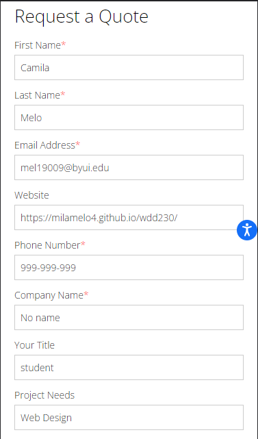

PARC: Contrast
SPINX Crafting Digital
https://www.spinxdigital.comThis website shows a great contrast between foreground and background colors. We have a dark background with brighter foreground which enhance readability.In the screenshot we can also see an image with transparency applied and the text that was placed as a foreground of that image uses a white bright color with large font to emphasize the message being displayed.
White Space and Clean Design
The Creative Momentum
https://www.thecreativemomentum.com This quote form has a good white space applied, especially in the input boxes, where by default there is no padding. I purposely typed some information to see how the padding not only was applied between input boxes but also inside where the user types their information. This form is clear and easy to read and it has the appropriate white space and padding.
PARC: Alignment
Straight North
https://www.straightnorth.comI choose this site because in this image we can see the alignments horizontally and vertically. We have a title aligned to the left and the paragraph that belongs to that title is aligned at the same position, to the left. That makes the reference between title and paragraph. There are four images that are also aligned with each other. The two images bellow the first one aligns perfectly in the invisible vertical alignment of the first image.